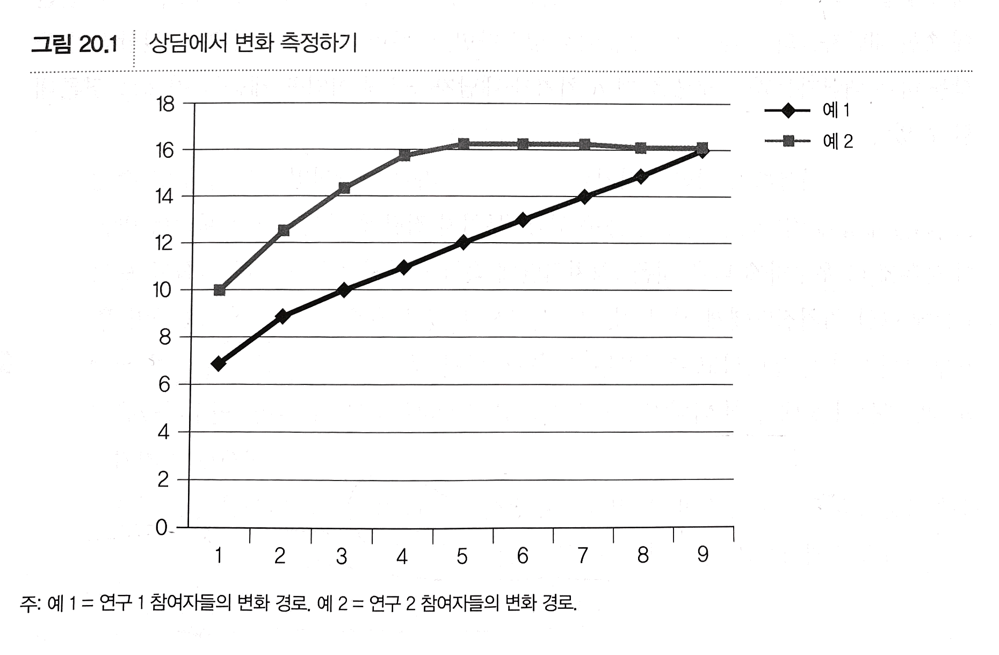
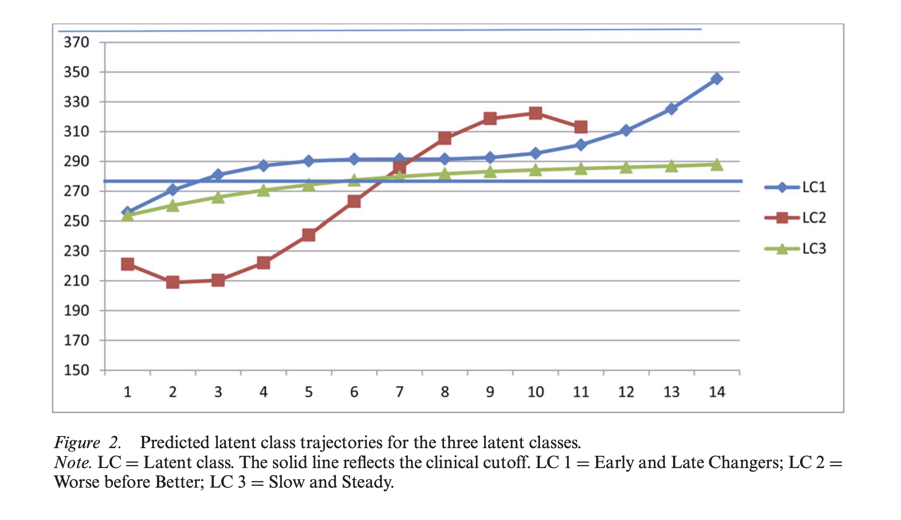

상담 성과 연구 (20장)
상담연구방법론, by Heppner, P. P., Wampold, B. E., Owen, J., Thopso, M. N.
상담은 효과가 있는가?
상담 성과, 과정(21장), 프로그램의 효과(22장)를 평가하는 것이 설계의 범주는 아니지만, 각각의 연구 특성을 살펴보고자 함.
(1) 상담 성과 연구의 역사, (2) 성과 연구 방략, (3) 방법론적 논점을 살펴보고자 함.
상담에서의 초기 성과 연구
<상담심리학 학술지> 1호의 첫 번째 논문 (Forgy & Black, 1954)
- 100명의 스탠퍼드 대학생을 3년에 걸쳐 연구
- “내담자 중심의 허용적인 상담” vs. “구조화된 상담자 중심 상담”을 비교
- 3명의 상담자 중 무작위로 1명에게 상담 (상담자는 두 가지 상담법을 모두 사용)
- 내담자 중심의 상담에 더 만족하였으나,
- 추후 검사에서는 상담 종류나 상담자에 차이가 없었음.
- 상담자와 치료 유형 간의 상호작용이 있었음.
- 3명 중 1명의 상담자의 경우, 상담자 중심을 사용했을 때, 만족도가 더 높았고,
- 나머지 2명의 경우, 내담자 중심을 사용했을 때, 만족도가 더 높았음.
Rogers(1954)의 연구
- 검사(진로, 적성) 해석 인터뷰 방법 중, “검사 중심” vs. “자기 평가” 기법을 비교
- 내담자의 적극적 참여와 검사 외의 자료에 대한 관심의 차이
- 내담자의 적극적 참여와 검사 외의 자료에 대한 관심의 차이
- “자기 이해”의 측정에서 차이가 없었음
- 기법과 지능 간의 상호작용이 있었음.
- 지능이 높은 경우, 기법에 관계없이 자기 이해가 증진되었으나,
- 지능이 낮은 경우, 자기 평가 기법을 사용했을 때에만, 자기 이해가 증진되었음.
이후 연구들에서도 서로 다른 치료 유형 간의 차이가 미미하거나 없다는 보고가 있었으나,
상담자 간에는 차이가 존재한다는 보고가 있었음.
초기 상담 성과에 관한 연구에서 살펴본 점들
- 해당 치료기법이 얼마나 충실히 전달되었는지
- 상담자 효과는 어떤지
- 상담자 효과가 성과에 어떤 영향을 미치는지
- 상담 효과가 내담자에 따라 다르게 나타나는지
지난 40년간 상담 효과는 큰 관심을 받음: 처지가 과연 효과가 있는가는 의료 서비스를 제공하는 분야에서 중요한 문제임
- 대표적인 비판적인 연구가 Hans Eysenck(1952, 1960, 1969)에 의한 것인데, 이로부터 성과와 관련된 연구들이 촉발되었음.
- 오랜 시간에 걸쳐 세련되고 복잡한 연구 방법들이 고안되어 지식이 증진되었음.
- 기념비적인 연구인 Smith & Glass(1977)는 상담 및 심리치료 분야의 모든 통제 연구들을 메타 분석했고,
- 당시 많은 논란이 있었으나, 상담 및 심리치료가 매우 효과적이라는 점을 확인했음.
처치가 효과적임 뿐 아니라, 다음 질문에 대한 답하는 것이 중요함.
“특정 문제를 지닌 내담자에게는 누가 어떤 치료를 어떤 상황에서 했을 때 가장 효과적인가? 그리고 그것은 어떻게 발생하는가?”
사전-사후 검사 외에 회기와 회기 사이, 회기 중 발생하는 사건들을 조사할 필요가 있음.
성과 연구 수행 방략
일괄 처치 방략, 해체 방략, 추가 방략, 파라미터 방략, 공통요인 통제집단 설계, 비교 성과 방략, 조절 설계
일괄 처치 방략 (treatment package strategy)
앞서 다루었던 실험 연구의 대표적인 방식으로, “치료나 개입이 효과가 있는가”에 대한 답을 얻고자 함.
예들 들어, ’변증법적 행동치료’는 경계선 성격장애로 진단받은 사람들의 자해 행동을 감소시키는가? (Bohus et al., 2004)
- 50명의 경계선 성격장애로 진단받은 사람들을 치료 집단, 대기 집단에 무작위 배정
- 치료 집단에서 임상적 증상들이 유의하게 감소했음.
이 때, 두 집단 간의 차이는 “하나의 패키지”로서 처치에 귀인될 수 있음
- 이는 두 집단이 모든 면에서 동일하다는 가정하기 때문임.
- 따라서, 무선 할당은 중요한 요소가 되나, 동질성을 보장하는 것은 아님.
문제점들
- 특정 표본에서 얻은 결과라는 점에서 “우연히” 발견된 것일 수 있음
- 통계적 유의도를 5%로 설정한 경우, 100번의 연구 중 5번은 우연히 발견된 것임.
- 무처치 통제 집단의 문제
- 내담자가 치료를 받지 않았을 때의 상태라도 볼 수 없음.
- 내담자는 자연스러운 질환의 변화/역사를 포함하더라도,
- 예를 들어, 우울증 치료의 경우 대기자 집단에 배정된 참여자는 실망하거나 (“내 인생에서 행운이라는 것은 없어”), 다른 곳에서 상담을 받을 수 있음.
- 즉, 무처지 내담자들이 “실험에 대해 전혀 듣지고 등록하지도 않았을 경우 자연스럽게 나타날 수 있는” 상태를 반영하지 않을 수 있음.
- 윤리적 문제
- 대기자 집단에 배정된 내담자들은 치료를 받지 못하고, 그들의 상태가 악화될 수 있음.
- 하지만, 처치가 효과적임을 입증하기 전까지는 손해를 끼친다고 인식할 필요는 없음.
해체 방략 (dismantling strategy)
특정 “처치 패키지”가 효과적인 것으로 나타났다면,
“무엇이 그 처지의 활성적인(active)/효과적인 요소인가?”에 대해 물을 수 있음.
해체 방략에서는 1개 이상의 요소를 제외한 것을 일괄 처치와 비교함.
Jacobson et al.(1996)의 연구
- Beck 등은 인지치료의 핵심은 “인지 도식(schema)”의 변경이라는 주장을 근거로,
- 인지치료의 효과를 가져오는 기제를 확인하기 위해 3개의 집단을 비교 (사전-사후 설계)
- 인지치료 전체
- “핵심 도식을 변경”하는 치료 행위만 제외 (“행동 활성화” 및 “자동적 사고” 요소는 포함)
- “행동 활성화”만 포함
- 세 집단 간에 효과에는 차이가 없었음.
- 이는 인지치료의 성공여부에서 “인지적 요소들”이 결정적이지 않음을 의미 (Wampold & Imel, 2015)
추가 방략 (additive strategy)
이미 효과가 입증된 처치에 추가적인 요소를 더해 효과가 증진되는지를 확인하는 방법
Foa & Rauch(2004)의 연구
- 만성 PTSD를 가진 여성 폭력 피해자들을 대상
- 노출치료(exposure therapy) vs. 노출치료 + 인지적 재구조화 비교
- 외상 관련된 생각들의 감소에 있어서 차이가 없었음.
파라미터 방략 (parameter strategy)
앞서 두 방략이 특정 요소의 첨가와 제거에 초점을 맞춘 것과 달리,
파라미터 방략은 특정 요소의 “양”을 변화시키는 것에 초점을 맞춤.
Turner, Valtierra, Talken, Miller & DeAnda(1996)의 연구
- 50분 길이의 상담 회기가 30분 상담 회기보다 더 효과적인가?
- 상담 센터를 방문한 94명의 대학생을 대상으로 사전-사후 설계
- 대학 적응 척도, 내담자 만족도 질문지에서 모두 두 길이의 상담 간에 효과 차이가 없었음.
- “단기치료 모형을 적용해서 초기 성인, 대학생을 상담할 경우 한 회기가 30분으로 진행되는 상담이 50분으로 진행되는 상담만큼 효과적임을 시사한다”고 결론 (p. 231)
공통요인 통제집단 (common factors control group)
일괄 처치 설계에서 처치가 효과적인 것으로 확인되더라고, 어떤 요소가 효과를 야기했는지 알 수 없음. 앞서 3가지 방략을 통해 특정 요소의 효과를 확인하는 것이기는 하지만, 모든 처치에 공통되는 요소때문에 발생한 것임을 확인하는 것은 다른 문제임.
- 예를 들어, 우울증에 대한 인지행동치료의 효과에서 비합리적 사고나 핵심 도식의 변화가 아닌,
- 공감적인 치유자와의 관계
- 치료에 대한 설명과 근거 제시
- 상담 목표와 방략에 대한 일치
- 그 외의 치료적일 것으로 여겨지는 공통된 요소들
현대 의학에서도 희망, 기대 및 다른 심리적 요인으로 인한 플라시보 효과를 분리하고자 함.
- 이중 맹목(double blind) 설계: 약과 위약을 구분하지 못하도록 함.
- 위약의 효과가 무처지에 비해 효과가 있는지에 대해서는 의료계 연구자들은 관심이 없음.
이러한 방식의 “무선 위약 통제집단 설계”(randomized placebo control group)를 심리치료 연구에서 차용할 것을 제안함. (Rosenthal & Frank, 1956)
- 위약 통제 집단에서는 모든 “공통 요인들”이 존재하지만, 처치의 특수 요인은 존재하지 않음.
- 예를 들어, 특정 정신장애를 대상으로 인지행동치료의 효과를 검증할 때,
- 인지행동치료와 관련 있는 모든 요소들은 제거 (예, 행동 활성화, 현실 검증, 핵심 도식 변경 등)
- 내담자에게 공감적으로 반응하는 자비로운 상담자만 포함
- 대안 처치, 지지적 상담, 공통요인 통제집단 등으로 불림.
- 의학에서처럼 위약 집단을 설계하기는 상담에서는 거의 불가능함.
- 내담자는 가짜 상담과 진짜 상담을 인지할 수 있음.
- 또한 가짜 상담에는 공통요인이 포함되지 못할 수 있음: 예. 이유나 근거를 설득력 있게 제공하기
Markowitz, Kocsis, Bleiberg, Christos, and Sacks (2005)의 연구
- 기분부전 장애(dysthymia)로 진단 받은 사람들을 대상으로,
- 대인관계 심리치료, 항우울제, 단기지지치료의 우울증상에 대한 효과를 비교
- 대인관계 심리치료가 단기지지치료보다 효과가 높지 않았음.
- 비판점
- 단지지지치료가 비치료(non-treatment)가 아닐 수 있음.
- 심리치료사들이 잘 훈련되고, 동기부여가 높아 “지나치게 적극적”이었을 수 있음.
- 이 부분이 효과의 차이를 흐리게 했을 것이라 주장
- 공통요인 통제집단 설계와 관련된 수많은 어려움을 잘 보여줌
비교 성과 방략 (comparative outcome strategy)
서로 다른 처치들의 상대적 효과를 확인
- 이미 입증된 두 처지를 비교
- 새로 개발된 처치를 기존의 처치와 비교: 예. 비용이 낮고, 덜 복잡한 처치
- 무처치도 포함할 수 있음
처치 간의 비교가 공정한지 주의를 기울여야 함.
- 회기의 차이: 한 처치는 12회기를, 다른 처치는 6회기
- 상담자의 기술: 동일한 정도로 숙련되어야 함.
- 상담자의 충성도/헌신도(allegiance): 큰 영향을 미친다는 것이 밝혀져 있음.
- 특히, 연구자는 본인이 옹호하는 처치에 대해 열정적이고 헌신적임.
Clarkin 등(2007)의 연구
- 경계선 성격장애로 진단받은 사람들을 대상으로,
- 정신역동치료, 변증법적 행동치료, 지지적 심리치료를 비교
- 우울 증상, 불안, 전반적 기능 및 사회적 적응면에서 차이가 없었음.
- 자살경향성은 지지적 치료에 비해 두 치료가 효과적이었음.
- 분노와 짜증은 정신역동치료에서만 효과적이었음.
처치 간에 차이가 없는 많은 이유를 생각해볼 때, “왜” 상담이 효과적인지에 대해 의문을 제기하게 됨.
- 서로 다른 접근은 다른 기제로 효과가 날 수 있음.
- 모든 상담 접근의 기저에 있는 “공통 요인” 때문에 효과가 날 수 있음.
- “왜”에 대한 질문은 21장 “상담 과정 연구”에서 다룰 것임.
- “누구에게” 효과적인지도 중요한 문제임.
조절 설계 (moderation design)
다양한 유형의 내담자, 환경, 맥락에 따른 효과의 차이를 확인하고자 함.
Beutler 등(2011)의 연구
- 1,102명의 내담자가 포함된 12개의 연구를 메타분석
- 저항적인 내담자에게는 비구조화된 처치가 더 효과적인 반면: 비지시적인(nondirective)
- 저항적이지 않은 내담자에게는 구조화된 처치가 더 효과적임을 확인: 지시적인(directive)
- 저항 수준 X 처치 유형의 상호작용/요인설계를 검증
Hembree, Street, Riggs, and Foa (2004)의 연구
- 만성의 PTSD를 가진 73명의 여성 폭력 희생자들을 대상으로,
- 인지행동치료에 대한 반응을 예측하는 요인을 확인
- 아동기 외상, 외상의 심각도, 폭력 유형 등
- 아동기 외상 이력이 있는 경우, 지속된 신체적 상해가 있는 경우에 인지행동치료 이후의 PTSD 증상의 심각도가 더 높았음.
성과 연구 수행에서의 방법론적 논점
- 적절한 비교 집단 선택하기 (선발과 제외 기준)
- 처치의 적절성 평가하기
- 성과의 변화 측정하기
- 상담자 효과
포함 및 배제 기준
연구참여자들에 대한 포함 및 배제 기준은 연구문제에 따라 결정되어 함.
예를 들어, 우울증을 호소하는 성인을 대상으로 하는 처치를 개발하는 경우,
- DSM이나 우울 척도에 따라 절단점을 설정할 수 있음.
- 특정 유형의 환자들을 제외시킴으로써 “우울한 환자들”에 대해서만 결론을 내릴 수 있음.
- 일반적으로, 정신증, 약물남용, 자살 경향성 또는 시도, 특정 성격장애를 가진 내담자를 배제함.
- 특히, 향정신정 약물을 복용하는 내담자들은 배제하는 것은 심리치료와 약물치료의 효과의 혼동을 방지하기 위함.
- 윤리적, 임상적, 연구 목적을 위해, 주로 자살적 성향의 내담자들을 배제함.
일반화 가능성이 일부 희생될 수 있음.
처치의 적절성 평가: 충실도, 역량, 구분
Assessing Treatment Integrity: Adherence, Competence, and Differentiation
실행된 처치가 의도한 처치를 충실히 따르고 있는가에 대한 의문임.
- Bhar와 Beck(2009)은 정신역동치료와 인지행동치료를 비교한 연구들에서
- “상담자의 충실도”와 “역량”에서 적절했는지를 조사했음.
- 67%의 연구에서 처치의 원칙을 따랐는지 또는 상담자가 유능하게 처치를 수행했는지 점검하지 않았음.
- 즉, 독립변수가 적절히 조작되었는지 의문스러움.
타당한 처치를 하기 위해서는 다음과 요인들을 고려.
처치의 충실도(fidelity/adhrence)
- 처치를 상세히 기술하고 점검: 처치 매뉴얼과 점검 도구
- 예. 가장 잘 알려진 메뉴얼은 우울증에 대한 인지행동치료; Cognitive Behavioral Treatment of Depression (Beck, Rush, Shaw, & Emery, 1979)
- 충실도 측정도구를 통해 의도했던 대로 처치가 이루어졌는지 점검
- 1980년대 후반부터 처치 메뉴얼과 충실도 측정도구가 개발됨.
- 예. 상담연구에서 주로 사용된 “밴더빌트 치료 방략 척도”; Butler, Henry, and Strupp’s (1992)
- Strupp and Binder’s (1984) treatment manual, “Psychotherapy in a New Key”를 충실히 지키는지 점검
- 누가 평정하는지에 대한 논란이 있음: 경험 많은 임상가, 내담자, 훈련받은 일반인 등
역량(competence)
상담자에 대한 훈련
- 상담자의 역량을 높여 기술을 능숙하게 적용할 수 있어야 함
- 충실도와 역량이 모두 치료 성과와 관계없다는 보고가 있는데,
- 내담자와의 “치료 관계”와 같은 요인들 때문에, 좀 더 복잡한 관계가 있을 수 있음.
구분(differentiation)
비교 성과 연구에서 비교되는 처치들이 눈에 띄게 구분되어야 함.
- 예를 들어, Strupp and Binder’s (1984)의 단기역동치료 vs. Beck et al.’s (1979)의 인지행동치료를 비교한다면,
- 부적응적 대인관계 궤도를 파악하는 데에서 단기역동치료의 상담자가 높은 점수를 얻고,
- 인지행동치료의 상담자에게는 낮을 것으로 예상해야 함.
- 즉, 다른 상담 접근의 충실도를 측정하는 척도에서 각기 다른 점수를 얻어야 함.
변화 측정하기
상담의 성과를 확인할 때, 증상/내담자의 변화를 측정하고 분석하는 것은 중요함.
임상적 유의성 대 통계적 유의성
- 통계적 유의도가 치료 효과에 대한 좋은 지표가 아님
- 예를 들어, 데이트 성폭력 예방 프로그램을 실시한 집단에서 “성폭력 미신 수용도”(rape myth acceptance)가 통계적으로 유의하게 감소했다고 해도, 이 사람들이 실제 데이트 성폭력을 범할 가능성이 감소될 것인가?
이를 해결하기 위해, Jacobson, Follette, and Revenstorf (1984), Jacobson and Truax (1991)는
“임상적 유의성”(clinical signifance)를 계산하는 법을 도입함.
내담자가 처치 이후 향상/회복 되었다고 말하기 위해서는
- 첫째, 역기능적인 점수 분포에서 기능적인 점수 분포로 그 값이 이동해야 함.
- 둘째, 신뢰할 만한 변화 지표가 1보다 커야 함.
- (사전 검사 점수 - 사후 검사 점수) / 측정의 표준 오차
- 즉, 변화가 우연히 발생할 것으로 예상되는 변화보다 커야함.
- 처치 집단에서 향상된 비율과 통제 집단에서 향상된 비율을 비교하기도 함.
Tingey, Lambert, Burlingame, and Hansen (1996)는 이를 확장하여,
- 여러 표본으로부터 연속선을 구성하여, 내담자의 사전-사후 검사에서 어떻게 이동하는지로 내담자의 의미 있는 변화를 확인
- 예를 들어, (1) 증상이 없는 집단, (2) 증상이 경미한 집단, (3) 증상이 중간 정도인 집단(외래 상담자), (4) 증상이 심한 집단(입원 환자)
- 이들 표본에서 증상 체크리스트-90 수정본 검사에 대한 절단점/신뢰 구간을 정했음.
- 이를 통해, 이 체크리스트를 사용하는 연구자는 임상적으로 의미있는 변화를 계산할 수 있음.
상태-특성 불안 척도(State-Trait Anxiety Inventory; STAI), Auchenbach의 아동 행동 체크리스트, 상담 성과 질문지-45, 벡 우울 질문지 등에 대해서도 임상적 의미를 정의했음.
임상적 유의성은 아직 널리 퍼져있지 않으며, 이를 계산한 논문도 거의 없으나,
광범위하게 적용되기를 제안함!
성과와 변화 측정하기
상담이 진행되면서 발생한 변화를 추정하는 데에는 방법론적, 통계적 어려움이 있음.
어떤 통계 모형을 사용하는지에 따라 결론이 달라질 수 있음.
성과의 측정
가장 간단하고 논리적인 방법은 사후 검사에서 집단 간 차이가 존재하는지에 대한 가설을 검증하는 것임.
- 유의도를 5%로 설정한다면, 집단 간 차이가 없다는 영가설이 기각되면, 이 차이는 100회 중 5회 정도만 우연히 관찰될 정도이므로, 처치 집단의 내담자들에게 처치의 효과가 존재한다고 결론을 내릴 수 있음.
- 그럼에도 불구하고, 영가설을 기각했다는 것이 실질적인 효과(effect size)가 있다는 것을 의미하지는 않음
- 예. 표본의 수에 영향을 크게 받음.
- Significant/유의미하다는 표현이 부적절하다고 주장하는 사람들도 있음.
- 임상적으로 의미있는 차이에 대해 논의하는 것이 적절함
사후 검사 차이에 대한 비판
- 무처치 집단의 참여자들이 자연스럽게 증상이 악화된 것일 수도 있음.
- 처치는 악화되는 것을 방지한 것 뿐일 수도 있음.
- 사후 검사만 본 경우, 내담자들이 임상적으로 의미있는 변화가 발생했는지 확인할 수 없음.
사전 검사의 추가
- 반드시 필요하지 않다는 주장도 있음
- 동일한 척도의 사용시 민감화의 문제나 익성명 등의 문제가 있을 수 있음
- 참여자 선발을 위해 검사 점수를 활용해야 하는 경우에 필요
- 사전 검사와 사후 검사는 높은 상관 관계가 존재하므로, 이를 고려함으로써(오차변량의 감소) 통계적 검증력을 높임.
- 내담자 각자의 진전에 대해 파악하여, 임상적으로 의미 있는 변화를 확인할 수 있음.
변화/진전을 측정
- 사전-사후 뿐 아니라 치료 중 여러 번 측정하므로써 치료의 진전 효과를 조사할 수 있음.
- 성장곡선 모형(growth curve modeling): 절편과 기울기/곡선를 추정
- 아래와 같이, 변화는 선형적일 수도 있고, 점차 성장이 둔화되는 비선형 모형일 수도 있음.

Owen 등(2015)은 38,985명 중 10,854명의 내담자 표본 (513명의 상담자)을 분석
- 46개 대학의 상담 센터와 1개의 정신건강 센터에서 수집
- 5 ~ 25 회기에 걸쳐 상담을 받은 내담자들
- 서로 다른 패턴을 보이는 세 종류의 그룹으로 나눌 수 있었음.

상담자 효과
Wampold & Bhati (2004)는 심리치료 및 임상 실험의 역사에서 누락된 중요한 측면 중 하나로 상담자 효과를 지적함.
역사적으로 무선 통제집단 설계는 교육학, 농학, 의학 분야에서 사용되었는데, 서비스를 제공하는 사람을 중요하지 않게 간주함.
- 교육학: 어떤 프로그램이 효과적인지 관심이 있었고, 교사는 교체할 수 있다고 봄.
- 농학: 비료, 신품종 씨앗, 관개에 초점을 두고, 농부에는 관심이 없었음.
- 의학: 약물의 효능을 강조하고, 의도적으로 의사의 효과는 무시했음.
상담자 또는 집단(집단 기반 치료에서)의 요소를 간과할 경우, 연구 결과를 심각히 왜곡할 수 있음.
대규모 치밀한 조사를 통해 실제로 상담자 효과는 매우 큰 것으로 밝혀졌음: Baldwin & Imel, 2013; Wampold & Imel, 2015, Wampold & Brown, 2005; Kim, Wampold, & Bolt, 2006; Wampold, 2001
- 3 ~ 7%의 성과 변량을 상담자 효과로 설명되는 반면, 처치는 많아야 1% 정도의 변량을 설명함.
- The Great Psychotherapy Debate - The Evidence for What Makes Psychotherapy Work (Wampold & Imel, 2015)
- 처치에 비해 매우 큰 효과이나, (효과 전체는 13%로 보고 되기도 함; Wampold, 2001).
- 절대적 값으로 보면, 어느 상담자를 만나느냐는 중요하지 않을 수 있음.
- “상담자 내” 변동성이 매우 큼; 즉, 어떤 내담자와는 성과가 좋지만, 다른 내담자와는 성과가 좋지 않을 수 있음.
- 상담 과정 변수(21장)와 비슷하거나 높음; 예. alliance, adherence
- 상담자 역량의 중요성이 강조되어야 함.
Wampold, B. E., & Brown, G. S. J. (2005). Estimating variability in outcomes attributable to therapists: a naturalistic study of outcomes in managed care. Journal of consulting and clinical psychology, 73(5), 914.
임상 진료에서 치료사에게 기인하는 결과의 변동성을 추정하기 위해 저자들은 관리형 치료의 맥락에서 약 581명의 치료사가 진료한 6,146명의 환자 결과를 분석했습니다. 이 분석을 위해 저자들은 치료사를 무작위 요인으로 취급하는 다단계 통계 절차를 사용했습니다. 초기 중증도 수준을 고려했을 때, 결과 변화의 약 5%는 치료사 때문이었습니다. 환자의 나이, 성별, 진단명은 물론 치료사의 나이, 성별, 경력, 전문 학위도 치료사 간 결과의 변동성을 거의 설명하지 못했습니다. 환자가 심리치료와 동시에 향정신성 약물을 복용하고 있는지 여부는 치료사의 변동성에 영향을 미쳤습니다. 그러나 치료 효과가 높은 치료사의 환자들은 치료 효과가 낮은 치료사의 환자들보다 약물 치료의 혜택을 더 많이 받았습니다. (by DeepL)
Kim, D. M., Wampold, B. E., & Bolt, D. M. (2006). Therapist effects in psychotherapy: A random-effects modeling of the National Institute of Mental Health Treatment of Depression Collaborative Research Program data. Psychotherapy Research, 16(02), 161-172.
국립정신건강연구소의 우울증 치료 협력 연구 프로그램의 두 가지 심리치료 조건(cognitive/behavioral treatment and interpersonal therapy)에 대한 완전 치료 및 치료 의향 샘플 데이터를 분석하여 치료사에 따른 결과의 변동성 비율을 추정했습니다. 다단계 분석에서 치료사들은 치료법 내에 중첩되어 있는 무작위 요인으로 간주되었습니다. 여러 가지 방법으로 치료사의 변동성을 모델링한 이 분석에 따르면 치료 결과의 변동성 중 약 8%가 치료사 때문인 것으로 나타난 반면, 제공된 특정 치료로 인한 변동성은 0%였습니다. 치료사 효과를 적절히 모델링한 결과, 방법론적 고려사항에서 예측한 대로 중증 우울증 환자의 경우 이전에 발견되었던 두 심리치료 조건 간의 효과 차이가 사라졌습니다. (by DeepL)
- 연구에서도 어떤 상담자를 선발하는지에 따라 상담 성과가 달라질 수 있음.
- 또한, 상담자 효과를 파악하지 않으면, 치료 효과가 과대 추정될 수 있음.